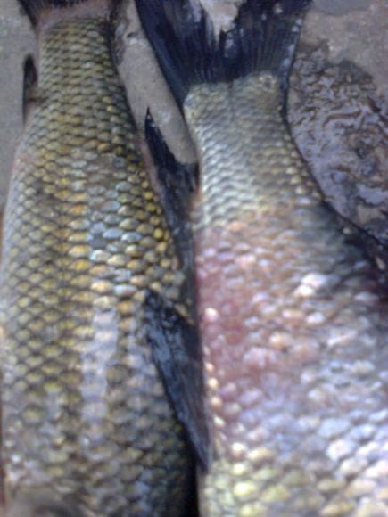
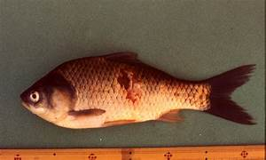
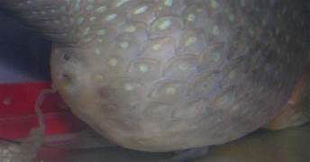
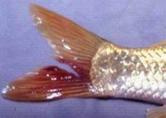
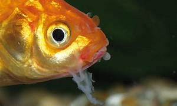
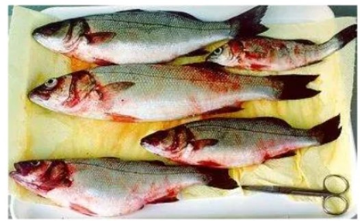

Azithrommycin and trimethoprim

cephalosporins
The Temperature range of the Rohu Fish is in between the 22-31°C
| Disease | Image | Medicine to cure | Company of Medicine | pH Range |
|---|---|---|---|---|
| Bacterial infections |  | Amoxicillin,Doxycycline,Cephalexin,Ciprofloxacin,Clindamycin,Metronidazole, Azithrommycin and trimethoprim |
Pfizer,Merck and GlaxoSmithKline | 6.5 to 8.5 |
| Columnaris Disease | |
Copper Sulfate,Acrinflavine,Furan,Terramycin,Nitrofurazone and Kanamycin | Erythomycin and Tetracyclin | 6.7 to 8.6 |
| Aeromoniasis |  | Trimethoprism-sulfamethoxazole(TMP-SMX),Fluroquinolones,second-and third-generation cephalosporins |
Virbac,Zeotis and Bayer | 6.5 to 8.5 |
| Dropsy Disease |  | Mardel,xMaracyn® 2 and KanaPlex™ | Pfizer,Novartis and AstraZeneca | 6.5 to 8.5 |
| Disease | Image | Medicine to cure | Company of Medicine | pH Range |
|---|---|---|---|---|
| Fungal infections |  | Maracyn, Ich-X, salt,Nova-Zyme F | Formalin,Malachite Green and Pfizer | 6.7 to 8.6 |
| Respiratory infections |  | lysozyme, myeloperoxidase, and Aeromonas hydrophila | Nutra Respiro and Tetracyclin | 6.5 to 8.5 |
| Cold Water Vibriosis |  | lysozyme, myeloperoxidase | bacteriophages, and probiotics | 6.5 to 8.5 |
© 2023 Aquaculture Temperature Diseases
Follow our website on chrome